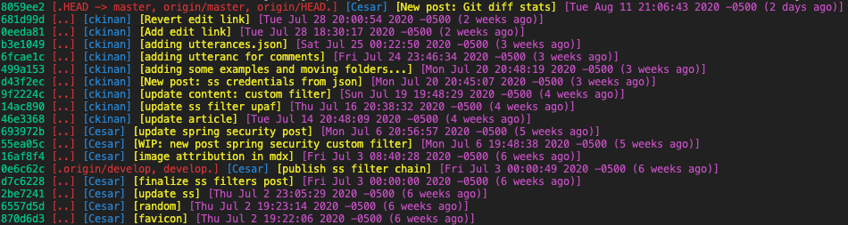

My Cheat Sheet for: Git Commands (it's supposed to (slowly) grow)
Git log with some styling (colors and specific order I like to see)
$ git log --pretty=format:"%C(Green)%h %C(Red)[.%D.] %C(Blue)[%an] %C(Yellow)[%s] %C(Magenta)[%ad (%ar)]"

Get number of files changed, lines inserted and lines removed between two branches or commits
$ git diff --shortstat master..develop
13 files changed, 90 insertions(+), 410 deletions(-)
$ git diff --shortstat 499a153..8059ee2
3 files changed, 69 insertions(+), 1 deletion(-)